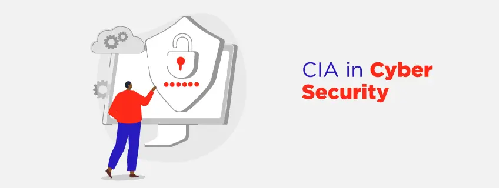
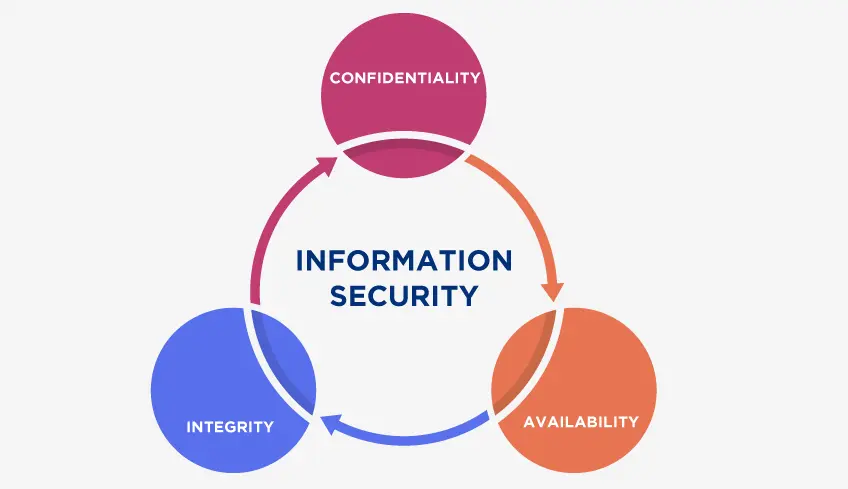

CIA triad
CIA Triad in Cyber Security
In the CIA Triad, you may picture a man in a black suit solving crime and running behind criminals, we are not talking about that. Our CIA triad is a Fundamental cybersecurity model that acts as a foundation for developing security policies designed to protect data. Confidentiality, integrity, and availability are the three letters upon which CIA triad stands. The CIA Triad is a common prototype that constructs the basis for the development of security systems. They are used to find vulnerabilities and methods to create solutions.
What is the CIA Triad in Cyber Security?
The CIA security triad model is constructed close to the principles of confidentiality, integrity, and availability of information are essential to the function of the business, and the CIA triad splits these three concepts into individual focal points. This differentiation is advantageous because it enables security teams to determine diverse methods by which they can address each problem. Ideally, when all three benchmarks are satisfied, the organization's security shape is more assertive and better qualified to handle threat incidents.
Like other unfortunate acronyms out there, one of them is the WTF (World Trade Federation), the CIA can often mean something else. It does refer to the Central Intelligence Agency. But when it comes to cybersecurity, it signifies something positively different.
In cybersecurity, the CIA refers to the CIA triad, a vision that concentrates on the balance between the confidentiality, integrity, and availability of data under the protection of your information security structure. The objective of the triad is to help institutions construct their security strategy and develop policies and controls while also conforming as a foundational starting point for any unknown use cases, products, and technologies.
Components of the CIA Triad
Important components of triad of information security are:
1. Confidentiality
Confidentiality in information security assures that information is accessible only by authorized individuals. It involves the actions of an organization to ensure data is kept confidential or private. Simply put, it’s about maintaining access to data to block unauthorized disclosure.
To accomplish this, access to information must be supervised and controlled to prevent unauthorized access to data, whether done intentionally or accidentally. A critical component of preserving confidentiality is making assure that people without proper authorization are stopped from accessing assets that are important to your business.
Contrariwise, an adequate system also assures that those who need to have access should have the required privileges.
Confidentiality can be overstepped in many ways, for instance, via direct attacks developed to acquire unauthorized access to servers, web apps, and backend databases to breach or tamper with data. Network reconnoitering and other sorts of scans, electronic eavesdropping, and escalation of privileges by an attacker are just a few examples.
2. Integrity
This refers to the quality of something being unmodified or complete. In Information Security, integrity is about assuring that data has not been tampered with and can be trusted.
This helps to preserve the trustworthiness of data by holding it in the right form and immune to any inappropriate mutation. It creates the foundation for your assets and requires institutions to ensure uniform, precise, trustworthy, and secure data. If the information is imprecise or has been tampered with, it could signify a cyber-attack, vulnerability, or security incident.
Countermeasures that protect data integrity comprise encryption, hashing, digital signatures, and digital certificates by trusted certificate authorities (CAs) to organizations to verify their originality to website users, equivalent to the path a passport or driver’s license can be used to verify an individual's identity.
3. Availability
Systems, applications, and data are of small worth to an organization and its consumers if they are not available when authorized users require them. Fairly simply, availability indicates that networks, systems, and applications are up and operating. It assures that authorized users have timely, trustworthy access to resources when they are required.
Multiple things can threaten availability, including hardware collapse or software issues, power failure, natural circumstances beyond one's control, and human error. Perhaps the most well-known attack that jeopardizes availability is the denial-of-service (DoD) or DDoS attack, in which the performance of a server, system, web app or web-based service is knowingly and maliciously tarnished, or the system becomes completely inaccessible.
Countermeasures to help guarantee availability include redundancy in servers, internal networks, applications, hardware fault tolerance, regular software patching, system upgrades, backups, comprehensive disaster recovery plans, and DoS protection solutions.
Examples of the CIA Triad in Practice
1. Putting Confidentiality into Practice
Data encryption is one method to assure confidentiality so that unauthorized users cannot retrieve or access the data to which they do not have permission access.
Access control is also an essential part of preserving confidentiality by governing which users have permission for accessing data.
Healthcare organizations that collect and operate patient data must maintain confidentiality and comply with HIPAA.
2. Putting Integrity into Practice
Event log management whenever the Security Incident happens and an Event Management system are important for ensuring data integrity.
Enforcing version control and audit trails to organizations IT structure will let your organization assure that its data is accurate and original.
Integrity in cyber security is a crucial component for organizations with compliance necessities. For example, a condition of SEC compliance conditions for financial services institutions requires providing correct and complete data to federal regulators.
3. Putting Availability into Practice
Engaging a backup system and a BCDR plan is important for maintaining data availability.
Employing cloud solutions like AWS, Azure, or Google cloud for data storage services is one of the methods by which an organization can enhance the availability of data for its consumers.
The requirement for data to be available and accessible increases for sectors like financial services and healthcare.
Importance of CIA Triad
The CIA triad constitutes the core basis for the development of security systems and policies for institutions. As such, the CIA triad plays a critical part in maintaining your data safe and protected against growing cyber threats. When a security incident, such as information swiping or a security breach occurs, it is deemed that an organization has been unsuccessful in properly enforcing one or more of these regulations. The CIA triad is crucial to information security since it enriches security posture, enables organizations stay obedient with complex regulations, and guarantees business continuity.
The contrary of confidentiality, integrity, and availability is disclosure, alteration, and destruction.
- Disclosure: When an authorized group gains access to your information.
- Alteration:When data is altered or modified.
- Destruction:When data, systems, or applications are destroyed or rendered inapproachable.
Why and When Should You Use the CIA Triad?
We use the CIA to evaluate data security of the security posture of the organization. It balances out the relationship between all the CIA triad pillars of confidentiality, integrity, and availability from a broad viewpoint. The framework requires that any attempt to secure digital information will not weaken another pillar of defense.
All the Certified Ethical Hacker certifications available across the globe will give your insight into why and when should you use the CIA triad for both offensive and defensive strategies in the organization.
Further, the CIA Triad effectively determines risk elements in information security systems and IT infrastructure. It is also a gateway for even more sophisticated risk assessment and management of security controls, such as the Common Vulnerabilities and Exposures (CVE) list and the National Vulnerability Database.
Goals of CIA in Cyber Security
The CIA Triad refers to the three objectives of cyber security Confidentiality, Integrity, and Availability of the organization's systems, network, and data.
- Confidentiality: Preserving sensitive information confidential. Encryption services can save your data at rest or in transit and prevent unauthorized entry to shielded data.
- Integrity:is the consistency of data, networks, and systems. This includes mitigation and aggressive measures to limit unapproved changes, while also having the capacity to retrieve data that has been compromised or lost.
- Availability:refers to authorized users that can voluntarily access the systems, networks, and data required to achieve their daily tasks. Resolving hardware and software disputes, along with routine maintenance is essential to maintaining systems up and available.
Implementation of the CIA Triad with Best Practices
The CIA triad model can be used in several ways, including:
- Discovering the best way to enforce authorization and authentication methods.
- Comprehending how to keep customer, employee, and critical business data protected.
- Assuring any new devices added to an organization are secure without introducing risks.
Best Practices of Confidentiality
- Data should be handled based on the organization's demanded privacy.
- Data should be encrypted using MFA or 2FA.
- Maintain access control checklists and other file permissions updated.
Best Practices of Integrity
- Assure employees are familiar with compliance and regulatory requirements to minimize human error.
- Use backup and recovery strategies and software.
- To assure integrity, use version control, access control, security control, logs, and checksums.
Best Practices of Availability
- Utilize preventative efforts such as redundancy, failover, and RAID. Assure systems and applications are up to date.
- Utilize network or server monitoring strategies.
- Assure a BCDR plan is in place in case of data loss event.
CIA Triad Model: Pros And Cons
Pros of the CIA triad
- Clarity: CIA model poses the quality of being specific, effortless, and precise to understand principles diminishing the risk of human blunder.
- Well-Balanced: This Model allows to meet business decisions and safety needs by providing availability to security professionals and leaders.
- Open-ended: There’s no permanent goal or status that you’re striving for with this model, which is useful as your organization develops and brings in new devices or upgrades data infrastructures.
Cons of the CIA triad
- Restricted: The CIA triad model is best used when considering data, and so it might not be the correct tool to safeguard against social engineering or phishing attacks targeting workers.
- Absence of specificity: The model’s unsophistication may also be a struggle for organizations with more undersized security knowledge or starting from scratch. On its own, the principle doesn’t furnish enough suggestions for building a comprehensive security model for an organization.
- Not holistic: We don’t suggest only utilizing the CIA triad as your security model. Rather, it should be used alongside different models and frameworks to support you in establishing strong procedures and make effective judgments.
Brief History of the CIA Triad
When the information security professionals gained more intelligence and learned over the course of time, they saw a situation where they needed to form a CIA triad. In context, the word “confidentiality” was formalized in the 1976 U.S. Air Force study; on the other hand, Integrity was formalized in a 1987 paper. Commercial computing requires a special focus on the correctness of data.
It is believed that the concept of "availability" came into prominence in 1988 (but this date is unknown historically) due to the Morris worm attack, which at that time was distributed via the internet and had devastating effects back then on overall system downtime, affecting thousands of major UNIX machines. In 2008, there were estimates of $100,000,000-$10,000,000 in damage, and the internet had to be partitioned for days to repair the damage. Overall, the foundational concept of the CIA was given around 1998.
Example of the CIA Triad
Confidentiality
- Solely authorized Payroll employees should have access to the employee finance payroll database.
- It’s reasonable for eCommerce customers to expect that the personal information they provide to an organization (such as credit card, contact, shipping, or other personal information) will be protected in a way that prevents unauthorized access or exposure.
- Those who work with an organization’s finances should be able to access spreadsheets, bank accounts, and other information related to the flow of money. Yet, the vast majority of different employees and possibly even certain executives may not be given access. To ensure these policies are followed, strict regulations have to be in place to determine who can see what.
Integrity
- E-commerce customers, for example, expect product and pricing information to be accurate, and that quantity, pricing, availability, and other information will not be altered after they place an order. Banking customers need to be able to entrust that their banking details and account balances have not been tampered with.
- If your company provides details about the CEO, senior managers, or any CXO on your organization's website, this information should have integrity. If it is incorrect or vulnerable to tamper with, the visitors who are visiting the website for information may suppose your organization is not trustworthy. Someone with a vested interest in damaging the reputation of your organization may attempt to hack your website and tamper with the descriptions, images, or titles of the executives to damage their reputation or the prestige of the business as a whole.
- Compromising integrity most of the time is been done intentionally. An adversary may circumvent or bypass a security system like an intrusion detection system (IDS), change system configurations to permit unauthorized access to the assets or tamper with the logs maintained by the server to obscure the attack.
- Integrity can be compromised by accident too. for example, Someone may accidentally enter the incorrect and insecure code or make another kind of unintentional or irresponsible mistake. Correspondingly, if the organization’s security structure including policies, procedures, and guidelines is inadequate or flawed, integrity can be violated without the person in the organization being accountable for the fault.
Availability
- If there is a power outage or any instability and there is no BCDR plan in place to help consumers recover and re-establish access to essential servers and systems, the availability pillar from the CIA triad will be compromised.
- Also, a natural disaster like a flood or severe hurricane will impact and stop consumers from heading to the office, which can interfere with the availability of their workstations and other official server and devices that provide business-critical service and information.
- Availability can be impacted and compromised by some intentional acts as well as damage done on purpose and secretly, such as deployment of denial-of-service (DoS) attacks or ransomware.
Is the CIA Triad Limited as a Cyber Security Strategy?
As the quantity of data explodes and as the intricacy of ensuring that data has deepened, the CIA in information security may appear to be an oversimplification of the truth of modern-day cyber security strategy. Nevertheless, it is essential to remember that the Triad is not a strategy; rather, it is a starting place from which a security group can make a strategy.
It is a foundational concept on which to create a full-scale, strong cyber security strategy. It cannot eradicate trouble, but it can help prioritize systemic threats to address them better. Further, the CIA Triad cannot control all forms of compromise, but it helps decrease the probability of unnecessary exposure and can help reduce the effect of a cyber-attack.